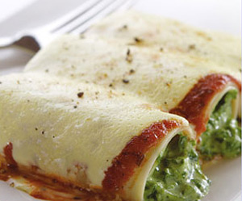

Cannelloni mit Lattichfüllung
5 von 612 Lasagneblätter in siedendem Salzwasser al dente kochen, herausnehmen, kalt abschrecken, auf einem Küchentuch auslegen.
Für die Füllung 600 g Lattich im selben Wasser 2 Minuten blanchieren, abgiessen, kalt abschrecken, ausdrücken. Zwiebeln und Knoblauch in Butter andämpfen. Gemüse zugeben, mitdämpfen. Mit 0.5 Dl Wein ablöschen, unbedeckt 3-4 Minuten köcheln, würzen, leicht auskühlen lassen.
150 g Gorgonzola unter das Gemüse mischen. Füllung auf den Lasagneblättern verteilen, aufrollen. In die ausgebutterte Form legen. Mit einer Bechamelsauce übergiessen und in der Mitte des auf 200 °C vorgeheizten Ofens 15-20 Minuten gratinieren.
